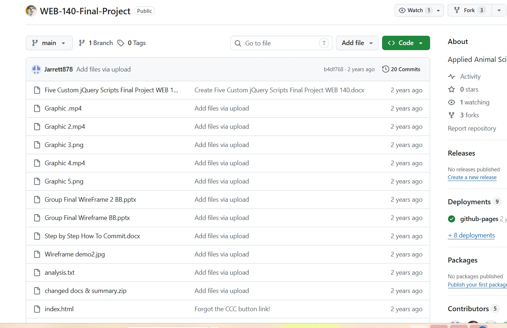

Artifact 01 · Web Development and Version Control
GitHub Repository
Description and reflection. This artifact shows my use of GitHub to organize a web development project with files, documentation, commits, and deployment materials. The repository helped me understand how professional developers track changes, preserve project history, and make work easier to review or share.
Context and impact. Using GitHub improved my organization and gave me experience with a real-world workflow that supports collaboration, accountability, and project maintenance.
Version controlProject organization